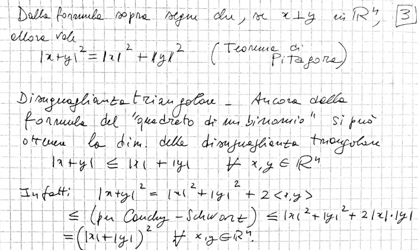
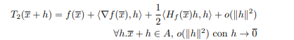
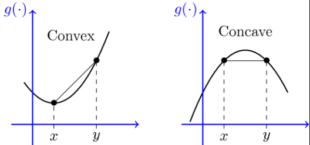

visualizzazione disuguaglianza triangolare

L’integrale di una funzione calcola l’area che c’è tra essa e l’asse delle x in un determinato intervallo.
come prima cosa divido l’intervallo in n parti, l’intervallo va da \([a,b]\), fisso un \(n \in \mathbb{N}\) qundi ogni pezzo è di lunghezza \(h=\frac{b-a}{n}\) quindi avremo \(a=x_0,x_1=x_0+h,x_k=x_0+n\times h=b\)
\(\forall k=0,1,...,n-1\) scelgo un punto (arbitrario) \(\xi_{k+1} \in [x_k,xk+1], \text{se } k=0 ,\space \xi \in [x_0,x_1]\)
somma n-esima \(S_n=\sum^n_{k=1} f(\xi_k)*h\)
come la continuità è relazionata con l’integrale
Teorema: sia f continua su [a,b] sia \((S_n) n \in \mathbb{N}\) una famiglia di somme di riemenn. allora \(\exists \displaystyle \lim_{n \rightarrow +\infty} S_n\) finito e indipendente dalle scelte degli \(\xi\) ( xi è la variabile che si mette nella funzione per calcolarne l’altezza in quel punto), Notazione \(\displaystyle \lim_{n \rightarrow \infty} S_n= \int_{a}^b f(x) dx\)
osservazione-1 se \(a=b \text{ allora } S_n=0 \space \forall n \in \mathbb{N} \int^b_a f(x) dx=0\)
osservazione-2 se \(f(x)=c ,\space \forall x \in [a,b], S_n=c(b-a), \space \int_a^b c \space dc=c(b-a)\)
osservazione-3 se \(S_n=\sum_{k=1}^n f(\xi_k)\times h \space \text{ dove h è uguale}=\frac{b-a}{n}\) le somme di reimann si possono definire qualsiasi \(f\) continua
osservazione: esistono funzioni discontinue per le quali il \(\displaystyle \lim_{n \rightarrow \infty} S_n\) dipende dalla scelta di \(\xi_k\) oppure non esiste
osservazione se \(f\) ha un numero finito di discontinuità con salto finito (senza limiti che vanno a \(\pm \infty\)), \(\int_a^b f\) + definito
\(f,g\) continua su \([a,b], \lambda \varphi \in \mathbb{R}\) allora \(h\times[a,b]\to \mathbb{R}, h(x)=\lambda f(x)+ \varphi g(x)\) h è integrabilie \(\int_a^b [\lambda f(x)+\varphi g(x)] dx = \lambda \int^a_b f + \varphi \int^b_a g\) (limite della somma è uguale alla somma dei limiti)
la somma di due integrali della stessa funzione con punto il limite opposto in comune allora è equivalente alla l’integrale degli altri due estremi
sia \(f [a,b] \to \mathbb{R}\) continua , \(c \in [a,b] \text{ allora } \int_a^b f= \int_a^c f + \int^b_c f\)
Convenzione
semplicemente l’integrale delle parti dei punti invertiti è uguale all’integrale negato questo per come si calcola l’integrale
convenzione \(f :\mathbb{R} \to \mathbb{R}, a,b \in \mathbb{R} : a> b, \int_a^b f(x) dx = - \int^a_b f(x) dx\)
Con la convenzione se \(f:\mathbb{R} \to \mathbb{R}\) è continua \(\forall a,b,c \in \mathbb{R}\) vale \(\int^b_a f = \int^c_a f+ \int_c^b f\) anche se \(a<b<c \text{ si inverte l'ultimo integrale}\)
se una funzione è sempre maggiore uguale in un intervallo chiuso allora sara maggiore uguale anche l’integrale
Monotonia \(f,g [a,b] \to \mathbb{R}\) continue, \(f(x)\le g(x) \forall x \in [a,b]\) se \(a<b\) allora \(\int^b_a f(x) dx \le \int^b_a g(x) dx\)
Teorema \(S_b = \sum^n_{k=1} f(\xi_k) \frac{b-a}{n}\) \(\frac{S_n}{b-a}= \frac{ \sum^n_{k=1} f(\xi_k)}{n}\)
Teorema: della media integrale, \(f:[a,b]\to \mathbb{R}\) continua \(\exists c \in [a,b] : \frac{1}{b-a}\times \int_a^b f(x) dx=f(c)\)
teorema dei valori intermedi
teorema (valori intermedi): \(f:[a,b] \to \mathbb{R}\) continua siano \(x_0,x_1 \in [a,b] : f(x_0) < f(x_1) \text{ allora } \forall y \in [f(x_0),f(x_1)] \text{ allora } \exists c \in [a,b] \text{tale che } f(x) = c\)
Dim Uso del toerema dei valori intermedi \(\exists x_0 ,x_1 \in [a,b] f(x_0) \le f(x \le f(x_1) \text{ dove x_0 è il minimo e x_1 è il massimo } \forall x \in [a,b]\) proprietà di monotonia \(\int^b_a f(x_0) dx \le \int_a^b f(x) dx \le \int_a^b f(x_1) dx\) essendo che x_0 è una constante per il teorema precedente \(f(x_0)(b-a) \le \int_a^b f(x) dx \le f(x_1) (b-a) \to f(x_0) \le \frac{1}{b-a} \int_a^b f(x) dx \le f(x_1)\) quindi abbiamo \(y \in [f(x_0),f(x_1)] \to \exists c \in [a,b] \text{tale che } f(c)=\frac{1}{b-a} \int^b_a f(x) dx\)
Definizione \(f : ]a,b[ \to \mathbb{R}\), prendiamo una funzione \(F\) si dice primitiva (se è derivabile nell’intervallo) \(f \text{ su } ]a,b[\) se vale \(F'(x)=f(x)\)
esempio
Oss: una funzione ha infinite primitive perchè si può aggiungere una costante che poi viene persa quando si fa la derivata
Prop: sia \(f: ]a,b[ \to \mathbb{R}\) siano \(F,G :]a,b[ \to \mathbb{R}\) due primitive di f piccolo su \(]a,b[\) Allora \(\forall x \in ]a,b[, \exists k \in \mathbb{R}, F(x) - G(x) =k\)
esempio
Dim considero \(H: ]a,b[ \to \mathbb{R} ,\space H(x)=F(x)-G(x) ,\) \(\space H'(x)=F'(x)-G'(x)=f(x)-f(x)=0,\) \(\forall x \in ]a,b[ \space \exists k \in \mathbb{R} , H(x)=k\)
la funzione integrale è una funzione che parte da un punto e calcola l’area fino ad un altro punto preso come variabilie
Def : sia \(f : ]a_0,b_0[ \to \mathbb{R}\) sia \(c \in ]a_0,b_0[\) definisco \(I_c : ]a_0,b_0[ \to \mathbb{R}, I_c(x)=\int_c^x f(t) dt = \int_c^x f\)
osservazione \(I_c (c)= \int^c_c f = 0\)
osservazione siano \(c_1,c_2 \in ]a_0,b_0[ ,\space f\) continua \(I_{c_1}(x)=\int_{c_1}^x f , I_{c_2}(x)=\int_{c_2}^x f\) , \(I_{c_1}(x)- I_{c_2}(x)=\int_{c_1}^x f - \int_{c_2}^x f= \int_{c_1}^x f + \int^{c_2}_x f = \text{proprieta add}= \int_{c_1}^{c_2} f(t) dt\) dunque \(I_{c_1}(x) I_{c_2}\) differeiscono per una constante
\(f: ]a,b[ \to \mathbb{R}\space\) continua \(, c \in ]a,b[\) \(\forall x \in ]a,b[\), \(I_c\) è derivabilie in x e vale \(I'_c(x)=f(x)\)
\((\frac{d}{dx} \int_c^x f(t) \space dt =f(x) \forall x \in ]a,b[)\)
esempio
\(F(x)= \int_0^x log(1+t^2)e^{-\sqrt{1+t^4}} dt\)
possiamo semplicemente calcolare la derivata di f prendendo la funzione dentro l’integrale
\(F'(t)= log(1+t^2)e^{-\sqrt{1+t^4}}\)
\(f:]a,b[\to \mathbb{R} \space I'_c(x)=f(x) \iff \displaystyle \lim_{h \rightarrow 0} \frac{I_c(x+h)-I_c(x)}{h}=f(x)\)
caso \(h \to 0+\):
\(I_c(x+h) - I_c(x)=\int_c^{x+h}f -\int_c^xf=\int_c^{x+h}f +\int_x^cf=\int_x^{x+h} f\)
\(\displaystyle \lim_{h \rightarrow +0} \frac{1}{h}\int_x^{x+h} f = f(x) \iff \forall h_n \to 0+, \displaystyle \lim_{x \rightarrow +\infty} \frac{1}{h_n} \int_x^{x+hn} f= f(x)\) posso applicare il teorema della media integrale \(\exists c_n \in ]x,x+h_n[ \text{ tale che } \frac{1}{h_n} \int_x^{x+hn}=f(c_n) \text{ con n che tende a più infinito e con f continua tende a } f(x)\)
Teorema: Sia \(f:]a_0,b_0[ \to \mathbb{R}\) continua, Sia \(F:]a_0,b_0[ \to \mathbb{R}\) primitiva di \(F\) e siano \(a,b \in ]a_0,b_0[\) allora vale \(\int _a^b f(x) \space dx =F(b)-F(a)=[F(x)]_a^b=F(x)|_a^b\)
esempio
fai un esempio del calcolo.
Dim : Per il teorema (versione 1), fissata \(c\in ]a,b[\) \(I_c\) è una proimitiva di \(f\). F è una primitiva di \(f \implies \exists k\in \mathbb{R}\) tale che \(F(x) = I_c(x)+k \forall x \in ]a,b[, \space F(b)-F(a)=I_c(b)+k-(I_c(a)+k)\) \(=I_c(b)-I_c(a)=\int_c^b f - \int_c^a f\) \(= \int_c^b f + \int _a^c f=\int_a^b f(x)\space dx\)
| f | F |
|---|---|
| \(x^n\) | \(\frac{x^{n+1}}{n+1}\) \(n \in \mathbb{N} \backslash \{0\}, x\in \mathbb{R}\) |
| \(x^k\) | \(\frac{x^{k+1}}{k+1}\) con \(k \in \mathbb{Z}\wedge k \neq -1, x\neq 0\) |
| \(\frac{1}{x}\) | \(ln(\|x\|)\) con \(x\neq 0\) |
| \(x^{\alpha}\) | \(\frac{x^{\alpha +1}}{\alpha +1}\) con \(\alpha \in \mathbb{R}\backslash \{-1\},x>0\) |
| \(cos(x)\) | \(sin(x)\) |
| \(sin(x)\) | \(-cos(x)\) |
| \(e^x\) | \(e^x\) |
| \(\frac{1}{1+x^2}\) | \(\arctan(x)\) |
| \(\frac{1}{cos^2x}\) | \(\tan(x)\) |
| \(\ln x\) | \(x \ln x - x\) |
primitiva generale di funzioni composte \(f:I\to J, g: J \to \mathbb{R}, I, J\) intervalli aperti, \(f,g\) derivabile, allora \(g \cdot f\) è derivabile in I \((g \cdot f)(x)=g(f(x))\) vale \((g \cdot f) (x)=g'(f(x))- f'(x) \forall x \in I, g \cdot f\) è una primitiva di \(h(x)=g'(f(x))f'(x)\) \(\implies \int_a^b g'(f(x))f'(x) dx\) \(=[g(f(x))]^{x=b}_{x=a}\)
Altre derivate composte
esponenziale \(\int a^x \space dx=\int e^{x\ln a} \space dx= \frac{1}{\ln a} \int \ln{a} \space e^{x \ln a}=[\frac{1}{\ln a}e^{x \ln a}]=\frac{1}{\ln a } a^x\)
\(I \subseteq \mathbb{R},f\) dove è una funzione continua su \(I, g\) derivabile su \(I,g'\) continua, \(F\) primitiva di \(f\) su \(I\)
\(F\), \(F(x)g(x)=F'(x)g(x)+F(x)g'(x), \forall x \in I\)
Sia \([a,b]\subseteq I, \int_a^b \frac{x}{dx}F(x)g(x) dx=\int_a^b fg + \int_a^b Fg'=[F(x)g(x)]^b_a\)
quindi \(\int_a^b f(x) g(x) \space dx=[F(x)g(x)]_a^b - \int F(x)g'(x) dx\)
dim
\(I \subseteq \mathbb{R}\) intervallo aperto \(c\in I, I_c(x)=\int_c^x f(t) \space dt\) (f continua ) \(TDC:I_c'(x)=f(x), \frac{d}{dx} \int_c^x f(t) dt=f(x)\)
Se considero \(H(x) = \in_x^c f(t) \space dt, H'(x)=\frac{d}{dx}( - \int_c^x f(t)\space dt \bigr)=-f(x)\)
\(\frac{d}{dx} \int_x^{x^3} f(t) \space dt\) sia \(f \cdot I \to \mathbb{R}\) continua \(h: \mathbb{R} \to I\) vogliamo allora \(- \frac{d}{dx} \int_c^{h(x)} f(t) \space dt\) dove h deve essere una funzione derivabile
Scrivo \(I_c(z)= \int_c^z f(t) \space dt ,\forall z \in I\)
Scrive \(\int_c^{h(x)}f(t) \space dt=I_c h(x)=I_c \cdot h(x)\)
se h è derivabile f è continua, la funzione \(I_c\) è derivabile (Teorema Fondamentale Calcolo). Dunque \((I_c \cdot h)'(x)=I_c(h(x))*h'(x)\) (derivata f. compota) \(= f(h(x)) h'(x)\)\(f:I \to \mathbb{R}\) continua. \(g:\mathbb{R} \to I\) derivabile
allora vale:
\(\frac{d}{dx}=\int_c^{h(x)} f(t) dt = f(h(x)) h'(x)\)
Cambio di variabile \(x=h(t)\) in \(\int f(x) dx\).
Teorema: \(I,J\subset \mathbb{R}\) intervalli aperti, \(h:I\to J\) \(f:J\to\mathbb{R}\), continua siano parti \(\alpha,\beta \in I\) allora vale:
\(\int _{h(\alpha)}^{h(\beta)} f(x)\space dx=\int_{\alpha}^{\beta}f(h(t))h'(t) \space dt\)
\(x=h(t) \in J\)= dominio di f
Considero \(F,G: I \to \mathbb{R}\) \(F(x)= \int_{h(\alpha)}^{h'(x)} f(x) dx, G(z) = \int_\alpha^z f(h(t))h'(t)\space dt\)
Dimostro che \(F \equiv G\)
\(F(\alpha)=0, G(\alpha)=0\)
\(G'(z)=f(h(z))h'(z) \forall z \in I\)
\(F'(z)=f(h(z))h'(z)\implies\) 2 vale e la tesi e dimostrata
Def: \(F:[a,+\infty[ \to \mathbb{R}\), continua. Si dice \(f\) integrabile in senso generalizzato su \([a,+\infty[\) se \(\exists\) finito :
\(\displaystyle \lim_{x \rightarrow \infty} \int_a^z f(x) dx = \int_a^{+\infty} f(x) dx\)
\(f::]-\infty,b] \to \mathbb{R}\) si fa \(\displaystyle \lim_{x \rightarrow -\infty} \int_z^b f(x) \space dx\)
Def \(f:]a,b[\to \mathbb{R}\) continua.Dico f integrabile in \(S,G\). se \(\exists\) finito \(\displaystyle \lim_{x \rightarrow 0_+} \int_z^b f(x) \space dx= \int_a^b f(x) \space dx\)
nel caso \(f: [a,b[ \to \mathbb{R}\) continua \(\int_a^b f(x) \space dx\) si definisca con \(\displaystyle \lim_{x \rightarrow b-} \int_a^z f(x)\space dx\)
Spazio \(\mathbb{R}^n=\{x=(x_1,\dots,x_n)|x_1,\dots,x_n \in \mathbb{R} \}\)
\(\mathbb{R}^1\): retta reale \(\mathbb{R}^2\): piano cartesiano \(\mathbb{R}^2\): spazio ordinario
Def: dati \(x=(x_1,\dots,x_n) \in \mathbb{R}^n\) ,\(y=(y_1,\dots,y_n) \in \mathbb{R}^n\), il prodotto scalare tra x e y è il numero reale \(<x,y>:=(x_1\times y_1+ \dots+ x_n\times y_n) = \sum^n_{k=1} x_k\times y_k\) (notazione equivalente è \(x \cdot y\))
Proprietà:
Def: \(x,y \in \mathbb{R}^n\) si dice che \(x\) e \(y\) sono ortogonali \(<x,y>=0\)
NOTA: Sono ortogonali o quando uno di essi è zero o quando sono perpendicolari
Def: la norma di un vettore (lunghezza) \(x \in \mathbb{R}^n\), \(||x||=\sqrt{<x,x>}\)
proprietà:
dimostrazione prop 1
\(\sqrt{<\lambda x,\lambda x>} = \sqrt{\sum^n_{k=1} (\lambda x)^2}=\sqrt{\sum^n_{k=1} \lambda^2 (x)^2}= |\lambda| |x|\)
visualizzazione disuguaglianza triangolare
Normalizzazione:dato un \(x\in \mathbb{R}^n \backslash {\underline{0}}\) cerco un \(r>0\) tale che \(||rx||=1\) applicando le proprietà 1 della norma del vettore \(r=\frac{1}{||x||}\)
NOTA: con la normalizzazione possiamo scrivere un vettore come il prodotto scalare tra la norma e le sue coordinate polari
esempio
proprità:
dimostrazione disuguaglianza triangolare
\(\forall x,y \in \mathbb{R}\) vale \(|<x,y>| \le |x| \cdot |y|\)
dimostrazione

Def: dati \(x,y \in \mathbb{R}^n\) la distanza tra \(x,y\) è il numero della norma della differenza \(||x-y||\)
def(Intorni Sferici) \(x \in \mathbb{R}^n,r >0\) \(B(x,r)=\{y \in \mathbb{R}^n |y-x|<r\}\) (palla o intorno sferico con centro x e raggio r>0)
es
\(n=1, x \in \mathbb{R},r >0\) \(B(x,r)=\{y \in \mathbb{R}^n / |y-x|<r\}= ]x-r,x+r[\)
\(n=2, x =(0,0)\) \(B((0,0),r)=\{y \in \mathbb{R}^n / |(y_1,y_2)-(0,0)|<r\}= \sqrt{y_1^2+y_2^2}<r\)
\(n=2, x =(0,0,0)=\underline{0}\) \(B(\underline{0},r)=\{y \in \mathbb{R}^n |(y_1,y_2)-(0,0)|<r\}= \sqrt{y_1^2+y_2^2}<r\)Def: \(A \subseteq \mathbb{R}^n\) si dice limitato se \(\exists r>0\) tale che \(A \subseteq B(0,r)\)
Def: \(A \subseteq \mathbb{R}^n\) si dice limitato se \(\exists r>0\) tale che \(B(x,r)\subseteq A\)
esempio
Una successione in \(\mathbb{R}^n\) è una famiglia di \((x_k) k \in \mathbb{N}\) dove \(x_k \in \mathbb{R}^n\) \(\forall x \in \mathbb{N}5\) \(x=(x_k^1,x_k^2,\dots,x_k^n) \in \mathbb{R}^n\) \(\forall x \in \mathbb{N}\) (nota non è un elevamento a potenza è un indice che va da 1 a n)
Def successione convergente \((x_k) k \in \mathbb{N}\) successioni in \(\mathbb{R}^n, x \in \mathbb{R}^n\) .\(\displaystyle \lim_{k \rightarrow \infty}x_k=x\) Si dice \(\displaystyle \lim_{k \rightarrow +\infty} x^1_k = x^1 , \dots, \displaystyle \lim_{k \rightarrow +\infty} x^n_k = x^n\)
oss: \((x_k)_{k \in \mathbb{N}},\) in \(\mathbb{R}^n\) \(x_k \to x \in \mathbb{R}^n \iff |x_k -x |\to 0\)(con k che tende a +infinito)
Def(grafico):Siano \(A \subseteq \mathbb{R}^n, B \subseteq \mathbb{R}^q\) dove \(\space n,q \in \mathbb{N}\) , Data\(f:A\to B\) il grafico è \(Graf(f)=\{(x,f(x))\} \subseteq A \times B\)
Funzioni Scalari:
Def(funzione continua): Dati \(A \subseteq \mathbb{R}^n, B\subset \mathbb{R}^q\). Sia \(f: A \to B\) con \(\bar{x} \in A\) si dice f continua in \(\bar{x}\) se vale\(\forall (x_k)_{k \in \mathbb{N}}\),( dove \((x_k)\) sono successioni in \(A\)), \(\displaystyle \lim_{k \rightarrow \infty} (x_k)=\bar{x}\) \(\implies \displaystyle \lim_{k \rightarrow \infty} f(x_k)=f(\bar{x})\) (convergenza in \(\mathbb{R}^q\))
Nota Si dimostra che tutte le funzioni “elementari” sono continue
oss \(f:A\to B\) è continua in \(\bar{x}\) \(\iff \forall \varepsilon >0 \exists \delta_{\varepsilon}\) tale che \(|f(y)-f(\bar{x})| < \varepsilon\) \(\forall x \in A\) con \(|y-\bar{x}|<\delta\)
Si dimostra che se \(f_1,f_2,\dots,f_p:\mathbb{R}^n\to \mathbb{R}\) scalari sono continue, allora ogni insieme \(A=\{x\in\mathbb{R}|f(x)_1<c_1,\dots,f(x)_p<c_p\}\)
\(f: \mathbb{R}^2 \to \mathbb{R}\) tale che \(\exists g:[0; +\infty[ \to \mathbb{R}\) per cui \(f(x,y)=g(|(x,y)|)=g(\sqrt{x^2+y^2})\)
gli insiemi di livello sono un modo di rappresentare le funzioni che consiste nel studiare una funzione ad un livello minore, per esempio studiare una funzione in \(\mathbb{R}^3\) come diverse funzioni in \(\mathbb{R}^2\)
es
\(f:\mathbb{R}^2 \to \mathbb{R}\) \(A \subseteq \mathbb{R}^2, f:A \to \mathbb{R}, b \in \mathbb{R}\) l’insieme di livello b di f è \(L_b=\{(x,y)\in A | f(x,y)=b\}=f(b)\)
Def(piano): un piano è una funzione \(f: \mathbb{R}^2 \to \mathbb{R},\space\), con la seguente focmula \(f(x,y)= ax+by+c \space\) dove \((a,b,c)\in \mathbb{R}^3\) (il \(Graf(f)\) è un piano ) # Derivate parziali, Continuità e Derivabilità
Def:$A \(\frac{\delta f}{\delta x}(\bar{x},\bar{y})=\) \(\displaystyle \lim_{h \rightarrow 0} \frac{f(\bar{x}+h,\bar{y})-f(\bar{x},\bar{y})}{h}\) ( e \(\frac{\delta f}{\delta y}(\bar{x},\bar{y})=\) \(\displaystyle \lim_{h \rightarrow 0} \frac{f(\bar{x},\bar{y}+h)-f(\bar{x},\bar{y})}{h}\) ) Se esistono i due limiti si chiama derivata parziale di f rispetto a x ( nel punto \((\bar{x},\bar{y})\))
Notazioni
\(\frac{\delta f}{\delta y}f(\bar{x},\bar{y})= D_y f(\bar{x},\bar{y})=\delta_y f(\bar{x},\bar{y})\)
Def(gradiente):Se \(\exists D_x f\) e \(\exists D_y f\) in \((\bar{x},\bar{y})\) allora \(\nabla f(\bar{x},\bar{y})\) \(=(D_x f(\bar{x},\bar{y}), D_y f(\bar{x},\bar{y}))\)
esempio
\(f(x,y)= xye^{-x^2}\) \(D_x f= y D_x(xe^{-x^2})\) \(=y[e^{-x^2}-2x^2 e^{-x^2}]=y(1-2x^2)e^{-x^2}\)
\(D_y f= xe^{-x^2}\)
Def: (derivata parziale n-dimensioni)Se \(A\subseteq \mathbb{R}^n\) dove \(f:A \to \mathbb{R}^n\), \(\bar{x}=(\bar{x}_1,\dots,\bar{x}_n) \in A\) e \(j \in \{1, \dots, n\}\) poniamo \(D_j f(\bar{x})=\delta_j f(\bar{x})=\frac{\delta f}{\delta x_j}(\bar{x})=\) \(\displaystyle \lim_{h \rightarrow 0} \frac{f(\bar{x}+he_j)-f(\bar{x})}{h}\). (dove \(e_j\) è definito come \(e_1=(1,0,\dots,0)\), \(e_2=(0,1,\dots,0),\dots\), \(e_n=(0,0,\dots,1)\) )
Mentre nelle funzioni in da \(\mathbb{R}\) a \(\mathbb{R}\) la derivabilità \(\implies\) continuità, dimostriamo che nelle funzioni in \(\mathbb{R}^n\) non è verificato.
dimostrazione

NOTA: in dimensione uno dire differenziabile e derivabile è la stessa cosa
Def:(funzione differenziabile) \(A \subseteq \mathbb{R}^2\) aperto. \(f:A\to \mathbb{R}, (\bar{x}\), \(\bar{y})\in A\) si dice \(f\) differenziale in \((\bar{x},\bar{y})\in A\) se:
oss: \(f\) è derivabile in \((\bar{x},\bar{y}) \in A \implies \space f\) continua in \((\bar{x},\bar{y})\)
Formule Taylor per f del primo ordine con punto \((\bar{x},\bar{y})\) è \(f(\bar{x},\bar{y})+D_x f(\bar{x},\bar{y})h + D_y f(\bar{x},\bar{y})k+o(|(|h,k)|)\)
o piccolo
Def: Sia \(A \subseteq \mathbb{R}^2,\) un insieme aperto contentente \((0,0) \in A\), sia \(g:A \to \mathbb{R}\), e \(p \ge 0\). Si scrive \(g(h,k)=o(|(h,k)|^p)\) per \((h,k) \to (0,0)\) se vale \(\forall \varepsilon >0,\space \exists \delta >0\) tale che \(\biggl |\frac{g(h,k)}{||(h,k)^p||}\biggr |<\varepsilon\) \(\forall (h,k) \in A \cap B((0,0)\delta)\)
esempi

\((\bar{x}+h,\bar{y}+k)=(x,y)\)
\(\bar{x}+h=\)(con h che tende a zero)\(x\to\bar{x}\)
\(\bar{y}+k=\)(con k che tende a zero)\(y\to\bar{y}\)
Taylor per F:
\(f(x,y)=f(\bar{x},\bar{y})+f<\nabla(\bar{x},\bar{y}),(x-\bar{x},y-\bar{y})>+o(|(x-\bar{x},y-\bar{y})|)\)
\(T_1(x,y)=f(\bar{x},\bar{y})+f<\nabla(\bar{x},\bar{y}),(x-\bar{x},y-\bar{y})>\)
\(T_1=\) Pol. Taylor 1° ordine
Il piano di equazione \(Z=T_1(x,y)\) si chiama piano tangente al grafico di \(f\) in \((\bar{x},\bar{y},f(\bar{x},\bar{y}))\) (se si immagina una curva nello spazio si può immaginare il piano tangente come un cartoncino appoggiato su un punto della curva)
esempio
\(f(x,y)=\sqrt{1+xy^2}\) \((\bar{x},\bar{y})=(2,-1)\)
\(D_x f=\frac{y^2}{2\sqrt{1+xy^2}}\)
\(D_y f=\frac{2xy}{2\sqrt{1+xy^2}}\)
\(f(2,-1)=\sqrt{3}\)
\(\nabla f(2,-1)=(\frac{y^2}{2\sqrt{1+xy^2}},\frac{2xy}{2\sqrt{1+xy^2}})\) \(=(\frac{1}{2\sqrt{3}},\frac{-2}{\sqrt{3}})\)
\(T_1(x,y)=f(2,1)+<\nabla f(2,-1),(x-2,y+1)>=\sqrt{3}+\frac{1}{2\sqrt{3}}(x-2)-\frac{-2}{\sqrt{3}}(y+1)\)
\(z=T_1(x,y)\) eq paino tangente
oss \(f:A \to \mathbb{R}\) A aperto di \(\mathbb{R}^2\), e se \(f\) è differenziabile in \((\bar{x},\bar{y})\implies f\) è continua in \((\bar{x},\bar{y})\)
Verifica
bisogna vedere che \(\forall (h_n,k_n) \to (0,0)\) (per ogni successione che tende a 0,0) vale \(f(\bar{x}+h_n,\bar{y}+k_n)\to f(\bar{x},\bar{y})\) (con \(n \to \infty\))
Sia \((h_n,k_n)\to (0,0)\) Taylor \(f(\bar{x}+h_n+\bar{y}+k_n)-f(\bar{x},\bar{y})=<\nabla f(\bar{x},\bar{y}),(h_n,k_n)>+o(|(h_n,k_n)|)\)
Def \(A \subseteq \mathbb{R}^2\) aperto, \(f: A \to \mathbb{R}\) si dice che \(f\) è di classe \(C^1 (A)\) se \(\exists D_x f, D_y f\) in ogni punto di A e in oltre sono continue in A
NOTA: si dimostra che le funzioni “elementari”,sono continue nei loro domini
Lemma: Se \(f\) è \(C^1(\mathbb{R}^2)\), dati \((\bar{x},\bar{y})\in \mathbb{R^2}\) e \(h,k \in \mathbb{R}\) allora \(\theta_1,\theta_2 \in ]0,1[\) tali che: 1.\(f(\bar{x}+h,y)-f(\bar{x},\bar{y})=D_x f(\bar{x}+\theta_1 h_1,\bar{y})h\)
dimostriamo il punto 2
\(g(t)=f(\bar{x},t)\) per \(t \in \mathbb{R}\)
\(g(\bar{y}+k)-g(\bar{y})=f(\bar{x},\bar{y}+k)-f(\bar{x},\bar{y})\)
Lagrange
\(g'(t)=\displaystyle \lim_{s \rightarrow 0} \frac{g(t+2)-g(t)}{s}=\) \(\displaystyle \lim_{s \rightarrow 0} \frac{f(\bar{x},t+s)-f(\bar{x},t)}{s}\) \(=\frac{\delta f}{\delta x} (\bar{x},t)\implies g'(t)=D_y f(\bar{x},t)\) per ipotesi g’ esiste ed è anche continua
Uso Lagrange per g con \(\bar{y}\) e \(\bar{y}+k\)
\(\exists \theta \in ]0,1[\) tale che \(g(\bar{y}+k)- g(\bar{y})=g'(\bar{y}+\theta)k\) che è uguale a dire \(f(\bar{x},\bar{y}+k)-f(\bar{x},\bar{y})= D_y f(\bar{x}+\theta_2 k)\)
Teorema: \(A \subseteq \mathbb{R}^2\), aperto \(f:A \to \mathbb{R}\). se \(f\) è \(C^1(A)\) allora \(f\) è differenziali in ogni \((\bar{x},\bar{y})\in A\) , \(f(\bar{x}+h,\bar{y}+k)-f(\bar{x},\bar{y})=<\nabla f(\bar{x},\bar{y}),(h,k)>+o(|(h,k)|)\)
Dimostrazione
\(A=\mathbb{R}, f \space C^1(\mathbb{R}^2),(\bar{x},\bar{y})\in \mathbb{R}^2\) sia \((h,k)\in \mathbb{R}^2\)
Utilizziamo Taylor
\(f(\bar{x}+h,\bar{y}+k)-f(\bar{x},\bar{y})=\) \(f(\bar{x}+h,\bar{y}+k)-f(\bar{x}+h,\bar{y})+f(\bar{x}+h,\bar{y})-f(\bar{x},\bar{y})\)
ora applichiamo il lemma, prima per \(f(\bar{x}+h,\bar{y}+k)-f(\bar{x}+h,\bar{y})\) e poi per \(f(\bar{x}+h,\bar{y})-f(\bar{x},\bar{y})\)
Dunque abbiamo \(\exists \theta_1,\theta_2 \in ]0,1[\) \(f(\bar{x}+h,\bar{y}+k)-f(\bar{x},\bar{y})=D_x f(\bar{x}+\theta_1h,\bar{y}h)+D_y f(\bar{x}+h,\bar{y}+\theta_2 k)k\)
Mostriamo che
Prima affermazione \(\iff D_x [f(\bar{x}+\theta_1 h,\bar{y})- D_x f(\bar{x},\bar{y})]h=o(|(h,k)|)\)
\(\forall \varepsilon >0 \exists \delta >0\) tale che \(\frac{|[D_x f(\bar{x}+\theta_1 h,\bar{y})-D_x f(\bar{x},\bar{y})]h|}{|(h,k)|}<\varepsilon\) \(0<|(h,k)|<\delta\) \(|D_x f(\bar{x}+\theta+h,\bar{y})- D_x f(\bar{x},\bar{y})| |\frac{h}{(h,k)}| \le |D_x f(\bar{x}+\theta_1 h, \bar{y})-D_x f(\bar{x},\bar{y})|<\varepsilon\)
se prendiamo \(\varepsilon >0,\delta\) verra fuori questo delta che dalla continuità \(D_x f\) in \((\bar{x},\bar{y}) \implies\) \(|D_x f(\bar{x}+\theta_1 h, \bar{y})-D_x f(\bar{x},\bar{y})|<\varepsilon\) \(\forall (y,v) \in B((\bar{x},\bar{y}),\delta)\)
es
\(f(x,y)= \sin(x^2+xy)\) \((\bar{x},\bar{y})=(-\sqrt{\frac{\pi}{4}},0)\)
\(f(-\sqrt{\frac{\pi}{4}},0)=\sin(\sqrt{\frac{\pi}{4})}=\frac{1}{\sqrt{2}}\)
\(D_x f(x,y)=\cos(x^2+xy)+ D_x(x^2+xy)=\cos(x^2+xy)+2x+y\) \(D_y f(x,y)=\cos(x^2+xy)+ D_y(x^2+xy)=\cos(x^2+xy)+x\)
\(\nabla f(-\frac{\pi}{4},0)=(-\sqrt{\frac{\pi}{2}},-\frac{1}{2}\sqrt{\frac{\pi}{2}})\)
\(T_1(x,y)=f(-\frac{\sqrt{\pi}}{2},2)+<\nabla f(-\sqrt{\frac{\pi}{4}},0),(x+\sqrt{\frac{\pi}{4}},y)>\) \(=\frac{1}{\sqrt{2}}+<\nabla (-\sqrt{\frac{\pi}{2}},-\frac{1}{2}\sqrt{\frac{\pi}{2}}),(x+\sqrt{\frac{\pi}{4}},y)>\)
Formula di Taylor:
\(f(x,y)=T_1(x,y)+o(|(x+\frac{\sqrt{\pi}}{2},y)|)\) per \((x,y) \to (-\frac{\sqrt{\pi}}{2},0)\)
\(z=T_1(x,y)\) equazione piano tangente \(=\{(x,y,z) \in \mathbb{R}^3 / z= T_1(x,y)\}\)
retta parametrica
\(\mathbb{R}^n,x \in \mathbb{R}^n, v \in \mathbb{R}^n\backslash \{0\}\), \(\{x+tv|t\in \mathbb{R}\}\), questo insieme è una retta parametrica passate per x e parallela a \(v\)
è una generalizzazione di una derivata parziale
Def \(A\in\mathbb{R}^2\), \(f:A\to\mathbb{R}\), \((\bar{x},\bar{y}) \in A\) \(v=(v_1,v_2)\) vettore unitario (\(|v|=1\)) la derivata direzionale \(\frac{\delta f}{\delta v}(\bar{x},\bar{y})\) è definita dal seguente limite \(\displaystyle \lim_{t \rightarrow 0} \frac{f((\bar{x},\bar{y})+t(v_1,v_2))-f(\bar{x},\bar{y})}{t}=\) \(\frac{\delta f}{\delta v}(\bar{x},\bar{y})=D_vf(\bar{x},\bar{y})\)
Oss 1: \(v=e_1=(1,0)\), \(\implies \frac{\delta f}{\delta e_1}=\frac{\delta f}{\delta x}\) , (Analogamente se \(v=e_2 \implies\) \(\frac{\delta f}{\delta e_1}=\frac{\delta f}{\delta x}\))
Oss 2 \(g(x)=f(\bar{x}+tv_1,\bar{y}+tv_2)\), \(g'(0)=\displaystyle \lim_{t \to 0} \frac{g(t)-g(0)}{t} =\) \(\displaystyle \lim_{t \rightarrow 0} \frac{f(\bar{x}+tv_1,\bar{y}+tv_2)-f(\bar{x},\bar{y})}{t}\) \(= \frac{\delta f}{\delta v}(\bar{x},\bar{y})\)
Teorema \(A \in \mathbb{R}^2, f: A \to \mathbb{R}\) f differenziabile in \((\bar{x},\bar{y}) \in A\) alora \(\forall v \in \mathbb{R}^2, |v|=1\) vale \(\frac{\delta f}{\delta v}(\bar{x},\bar{y})=<\nabla f(\bar{x},\bar{y}), (v_1,v_2)>\) in particolare osservo linearità in \((v_1,v_2)\)
\(\nabla f(\bar{x},\bar{y})=(D_x f(\bar{x},\bar{y}),D_y f(\bar{x},\bar{y}))\)
es
\(f(x,y)=e^{x^2+y^2}\) \(v=(a,b)=(2,1)\)
\(\nabla f(x,b)=(2xe^{x^2+y^2}, 2ye^{x^2+y^2})=\) \(2e^{x^2+y^2}(x,y)\)
\(\nabla f(2,1)= 2e^5 (2,1)\)
\(\frac{\delta f}{\delta v}(2,1)= < \nabla f(2,1),(v_1,v_2)>=<2e^5(2,1),(v_1,v_2)>=4e^5v_1+2e^5v_2\)
dimostrazione
\(\displaystyle \lim_{t \rightarrow 0} \frac{f((a,b)+tv)-f(a,b)}{t}=< \nabla f(a,b) , (v_1,v_2)>\)
\(f((a,b)+tv)-f(a,b)=<\nabla f(x,b), tv> + o(||tv||)\)
\(\displaystyle \lim_{t \rightarrow 0} \frac{<\nabla f(a,b),tv> +o(t)}{t}=<\nabla f(a,b),v>\) \(\displaystyle \lim_{t \rightarrow 0} <\nabla f(a,b),v> +\frac{o(t)}{t}\)
Tutto vale in \(\mathbb{R}^n, x(x_1,\dots,v_n)\) \(f:A\to \mathbb{R}\) \(A \subseteq \mathbb{R}^n\) aperto f differenziale \(\bar{x} \in A\) allora
\(\frac{\delta f}{\delta v}(\bar{x})=<\nabla f(\bar{x}),v>=\sum_{k=1}^n\frac{\delta f}{\delta v}(\bar{x})v_k\)
Problama: \(A \subseteq \mathbb{R}^2, (a,b)\in A\), \(f: A \to \mathbb{R}\) differenziali. cerchiamo tra tuttele direzioni unitarie \(v \in \mathbb{R}^2\) quella che rende max
Steps(trovare il vettore di crescita massima):
Sia una funzione \(f A \to \mathbb{R}\) differenziabile in \((a,b)\), cerchiamo una scelta di \(v \in \mathbb{R}^2, |v|=1\) che renda massima la derivata \(\frac{\delta f}{\delta v} (a,b)\).
Essendo f differenziabile utilizziamo il gradiente: \(\nabla f (a,b)\)
La scelta di \(\max_{|v|=1}\frac{\delta f}{\delta v}(a,b)=<\nabla f(a,b), \frac{\nabla f(a,b)}{|\nabla f(a,b)|}>\)
è la derivata del vettore è di \(f\) con il vettore massimo è \(|\nabla f(a,b)|\)
passaggi per arrivare alla formula
Uno Teorema prec. \(\frac{\delta f}{\delta v}(a,b)=<\nabla f(a,b),(v_1,v_2)>\)
Se \(\nabla f(a,b)=0 \implies\) \(\frac{\delta f}{\delta v}=0 \forall v\)
Se \(\nabla f(a,b)\neq0 \implies\) Scriviamo \(\nabla f(a,b)=|\nabla f(a,b)| \frac{\nabla f(a,b)}{|\nabla f(a,b)|}=\) \(r(\cos \mu,\sin \mu)\)
\(r>0\) opporiamo, \(\mu \in [0,2\mu]\) Analogamente scrivo \((\cos \theta, \sin \theta)\) per \(\theta \in [0,2\pi]\) \(<\nabla f(a,b),b>=<r(\cos \mu,\sin \mu),(\cos\theta,\sin \theta)>=(\cos \mu \cos \theta+ \sin \mu \sin \theta)=r \cos (\mu - \theta)\)
Dueque la derivata \(\frac{\delta f}{\delta v}(a,b)\) è massima se \((\cos \theta,\sin \theta)\) è un multimplo \(>0\) di \(\nabla f(a,b)\) dunque \(v_\max=\frac{\nabla f(a,b)}{|\nabla f(a,b)|}\)
Sintsi
f diff in \((a,b), \nabla f(a,b)\neq 0\)
\(\max \frac{\delta f}{\delta v}(a,b)=\) \(\frac{\delta f}{\delta v_\max}(a,b)\)
\(v_\max=\frac{\nabla f(a,b)}{|\nabla f(a,b)|}\) .Infine \(\frac{\delta f}{\delta v_\max} <\nabla f(a,b),v_\max>=\) \(<\nabla f(a,b), \frac{\nabla f(a,y)}{|\nabla f(a,b)|}=\frac{1}{|\nabla f|} <\nabla f,\nabla f>\) \(= \frac{|\nabla f|^2}{|\nabla f|}= |\nabla f(a,b)|=\frac{\delta f}{\delta v_\max}(a,b)\)
\(f((a,b)+\varepsilon v_\max)-f(a,b) \approx \varepsilon|\nabla f(a,b)|\)
considero \(r:]a,b[ \to \mathbb{R}^n\)
\(]a,b[ \to t \to r(t)=(r_1(t),\dots , r_n(t))\in \mathbb{R}^n\)
es
\(r(t)=(\cos t,\sin t)\)
data una funzione \(h: \mathbb{R}\to \mathbb{R}\)
allora il grafico della funzione è uguale al grafico di \(r(t)=(t,h(t))\)
cammino a elica \(r(t)=(\cos t, \sin t ,t) \in \mathbb{R}^3\)
Def: (Velocità di un cammino) \(r:]a,b[ \to \mathbb{R}^n\) \((r(t)=(r_1(t),\dots,r_n(t)))\).
Sia \(t \in [a,b]\) . Se le funzioni \(r_1,\dots,r_n\) sono derivabili in t si dice che r è derivabile in t e si pone \(r'(t)=(r'_1(t),\dots,r'_1(t))=\) velocità di \(r\) al tempo t.
es
\(r(t)= x+tv=(x_1+tv_1,\dots,x_n+tv_n)\)
\(r'(t)=(v_1,\dots,v_n)=v\) (constante in t)
\(r(t)= x+t^3v=(x_1+t^3v_1,\dots,x_n+t^3v_n)\)
\(g'(t)=3t^2v \in\) span \(\{ v\}, \forall t\) dipendente da t
Def: (velocitò scalare di \(r:]a,b[\to \mathbb{R}^n\)) Se r è derivabile in \(t\in ]a,b[, r'(t)\) velocità, \(|r'(t)|=\) velocità scalare
es
\(r(t)=(\cos t,\sin t),\space r'(t)=(-\sin t,\cos t)\)
Sia \(r:]a,b[ \to \mathbb{R}^n\) derivabile in \(t \in ]a,b[\)
\[ \begin{cases} r_1(t+s)= r_1(t)+r'_1(t)s+o(s), s\to 0 \\ \vdots \\ r_n(t+s)= r_n(t)+r'_n(t)s+o(s), s\to 0 \end{cases} \]
\(o(s)= (o_1(s),\dots, o_n(s))\)
\(r(t+s)-r(t)=r'(t)s+o(s)\)
\(\displaystyle \lim_{s \rightarrow 0} \frac{|O(s)|}{s}=0\)
es
(curva singolare)
\(r(t)=(t^3,t^2)\)
\(r'(t)=(3t^2,2t) \space \forall t \in \mathbb{R}\)
\(r'(0)=(0,0)\) \(t=0\) punto singolare
\(r(t)=(t^3,t^2)\) se \(t^3=s\) allora \(g(s)=(s,|s|^{\frac{2}{3}})\) (è una curva con lo stesso percorso di r)
Def \(r:]a,b[\to \mathbb{R}^n, r'(t)\)= velocità, Se \(\exists r''_j(t)\space \space \forall j=1,\dots,n\) poniamo \(r''(t)=(r''_1(t),\dots,r''_n(t))\) vettore accelerazione
Teorema:Sia \(r:]a,b[ \to \mathbb{R}^n, f: \mathbb{R}^n \to \mathbb{R}\)
\((f\cdot r) (t)=f(r(t)),\) r è derivabile in t e f differenziabile in \(r(t)\) allora \((f \cdot r )'(t)=< \nabla f(r(t)), r'(t)>\)
Generealizzazione del teorema
Torema \(r:]a,b[ \to \mathbb{R}^n, f:\mathbb{R}^n\to \mathbb{R}\) differenziale in \(r(t)\) e r derivabile in t, allora \((f \cdot r)'(t)=<\nabla f(r(t)),r'(t)>\) \(=\sum_{k=1}^n \frac{\delta f}{\delta x_k} (r(t)) r_k'(t)\)
es
\(r(t)=(2t,\cos t), f(x,y)=x^2e^{2y}\)
\((f \cdot r )(t)= f(r(t))=(2t)^2 e^{2\cos t}\)
\(D_t (f \cdot r)(t)= 8te^{2\cos t}-8 t^2 \sin t e^{2 \cos t}\)
es
\(r(t) = (2t,\cos t), f(x,y)=x^2 e^{2y}\) \(\nabla f(x,y)=(2xe^{2y},2x^2 e^{2y})\)
\(r'(t)=(2,-\sin t)\)
\((f \cdot r)'(t)=< \nabla f(2t,\cos t),(2,-\sin t)>\) \(=< (2 * 2t e^{2\cos t},2(2t)^2e^{2\cos t}),(2,-\sin t)>\) \(=8t e^{2\cos t}-8\sin(t)t^2e^{2\cos t}\)
È un modo per scrivere il gradiente di una funzione quando è in una certa forma.
Data una funzione \(f: \mathbb{R}^n \to \mathbb{R}^p\)
ossia per esempio \(x=(x_1,...,x_n) \to(f_1(x),...,f_p(x))\)
Se le p funzioni di arrivo sono differenziabili, allora la matrice jacobiana è definita in questo modo:
\(J_f(x) = \begin{pmatrix} \delta_{x_1} f_1(x) & ... & \delta_{x_n} f_1(x)\\ \vdots & \vdots & \vdots \\ \delta_{x_1} f_p(x) & ... & \delta_{x_n} f_p(x) \end{pmatrix}\)
Una matrice con p righe e n colonne, che rappresentano tutte le derivate parziali possibile
Osservazione
Da una funzione differenziabile f(r(x)) in modo simile a quanto fatto prima, abbiamo che
\(J_f(r(t)) J_r(t)\) è uguale al prodotto scalare!
\((\delta_1f(r(t)), ..., \delta_nf(r(t))) \cdot \begin{pmatrix} \delta_{s} r_1(t) \\ \vdots \\ \delta_{s} r_n(t) \end{pmatrix}\)
Ossia è proprio \(\delta_t(f(r(t))\) il prodotto scalare, ossia \(J_{f \cdot r}(t)\) e la cosa bella è che vale per dimensione qualsiasi. (vedere gli appunti lezione 11, ci dovrebbe essere l’enunciato di questo). # Matrice Jacobiana e Matrice Hessiana
È un modo per scrivere il gradiente di una funzione quando è in una certa forma.
Data una funzione \(f: \mathbb{R}^n \to \mathbb{R}^p\)
ossia per esempio \(x=(x_1,...,x_n) \to(f_1(x),...,f_p(x))\)
Se le p funzioni di arrivo sono differenziabili, allora la matrice jacobiana è definita in questo modo:
\(J_f(x) = \begin{pmatrix} \delta_{x_1} f_1(x) & ... & \delta_{x_n} f_1(x)\\ . & . & . \\ \delta_{x_1} f_p(x) & ... & \delta_{x_n} f_p(x) \end{pmatrix}\)
Una matrice con p righe e n colonne, che rappresentano tutte le derivate parziali possibile
Osservazione
Da una funzione differenziabile f(r(x)) in modo simile a quanto fatto prima, abbiamo che
\(J_f(r(t)) J_r(t)\) è uguale al prodotto scalare!
\((\delta_1f(r(t)), ..., \delta_nf(r(t))) \cdot \begin{pmatrix} \delta_{s} r_1(t) \\ . \\ \delta_{s} r_n(t) \end{pmatrix}\)
Ossia è proprio \(\delta_t(f(r(t))\) il prodotto scalare, ossia \(J_{f \cdot r}(t)\) e la cosa bella è che vale per dimensione qualsiasi. (vedere gli appunti lezione 11, ci dovrebbe essere l’enunciato di questo).
Nota: a differenza delle funzioni a due variabili quando si parla di funzioni a più variabili non possiamo definire il massimo in quanto non abbiamo neanche più il concetto di funzione crescente
sia \(f:A \to \mathbb{R}, \bar{x} \in A\) è minimo locale, f è differenziabile in \(\bar{x}\), allora si ha che \(\nabla f(\bar{x}) = 0\)
Quando il gradiente si annulla, quel punto in cui si annulla si chiama punto critico o stazionario.
sia \(f:A \to \R, \bar{x} \in A\) è minimo locale, f è differenziabile in xbar, allora si ha che \(\nabla f(\bar{x}) = 0\)
Quando il gradiente si annulla, quel punto in cui si annulla si chiama punto critico o stazionario.
Questa matrice contiene tutte le derivate seconde possibili per una certa funzione da Rn a R (sarà di dimensione n x n
$$ Hf(x) = \begin{pmatrix} {11} f(x) & … & {1n} f(x)\ . & . & . \ {n1} f(x) & … & {nn} f(x)
\end{pmatrix} $$
Sia f una funzione ben definita, con dominio multidimensionale.
Siano tutte le derivate seconde ben definite.
Allora \(\forall ij \in \{1,..,n\}, i \neq j\) si ha che \(\delta_{ij}f = \delta_{ji}f\), ossia è un altro modo per dire che la matrice hessiana è simmetrica.
Dimostrazione
l’idea principale è utilizzare qualcosa di simile alla differenziabilità per continuità e derivabilità parziale.
Considero
\(g(h) = f(x + h, y+h) + f(x, y) - f(x + h,y) - f(x, y + h)\)
poi considero
\(u(t) = f(x + t, y+h) + f(x, y) - f(x + t,y) - f(x, y + h)\) e utilizzando lagrange due volte ottengo che
\(g(h) = \delta_{xy}f(x + ah, y + bh)h^2\)
Lo faccio ancora per il simmetrico (cioè costruendomi una funzione v(t) che vari a seconda della y e mi trovo che
\(g(h) = \delta_{yx}f(x + ah, y + bh)h^2\)
Faccio il limite per h tendente a 0, dividendo per la stessa variabile, e trovo che sono esattamente uguali.
cioè
\(\lim_{h \to 0} \dfrac{\delta_{yx}f(x + ah, y + bh)h^2}{h^2} = \lim_{h \to 0} \delta_{yx}f(x + ah, y + bh)= \delta_{yx}f(x,y)\) l’ultimo uguale è giustificabile per la continuità della funzione f (basta aprire e controllare 🙂).
Queste cose sembrano essere un buon utilizzo della matrice hessiana.
Comunque vediamo cosa sono:
prendiamo una matrice \(A \in \R^{n \times n}\) tale che sia simmetrica, consideriamo una funzione
\(q_A : \R ^n \to \R\) definita in questo modo :
\(q_A(h) = \langle Ah, h\rangle\). Scopriremo che c’è una equivalenza (forse isomorfismo) fra un polinomio di grado n e una matrice n per n.
Si può dimostrare che è uguale a una forma quadrata questa matrice, questo perché
\(\sum^n_{k,j=1} a_{kj}h_jh_k = \sum^n_{k=1}a_k h^2_k + 2 \sum_{ 1\leq j < k \leq n} a_{jk} h_j h_k\) ed è qualcosa di molto comodo perché questo non è altro che (ricordando che \(a_k\) è un modo semplice per scrivere \(a_{kk}\)
\[ \langle Ah, h\rangle = (a_1h_1 + ...+ a_nh_n)^2 \]
Ma questo vale nel caso solo in cui \(a_ia_k = a_{ik}\), da ricordare!. Comunque c’è questa buonissima corrispondenza e ci piace molto.
Positivo
Se per ogni h diverso da zero la forma quadratica è sempre positiva
esempio se ho solo numeri sulla diagonale, probabilmente è di segno positivo
Negativo
Se per ogni h diverso da zero la forma quadratica è sempre negativa
Indefinita
Se esistono due h diversi fra loro per cui la forma della prima è minore di 0, la forma della seconda è maggiore di zero.
Altro
Ci sono anche altre caratterizzazione della forma quadratica.
ad esempio q(h1, h2) = h2^2 non è né indefinita, né positiva questa è semidefinita
La matrice considerata è sempre
\(\begin{pmatrix} a & b \\ b & c \\ \end{pmatrix}\)
Positivo
Una forma quadratica è positiva sse \(a > 0 \land ac - b^2 > 0\)
Negativa
Una forma quadrata è negativa sse \(a < 0 \land ac - b^2 > 0\)
Indefinita
sse il determinante è negativo., se il determinante è 0 si dice che è una matrice singolare.
Dimostrazione
vogliamo dimostrare un sse, andiamo per le due frecce.
\(\implies\)
Se pongo h = (1, 0) ottengo \(a > 0\) quindi deve essere così altrimenti assurdo.
se pongo h = (h,1) (nota questi due h sono diversi) ottengo \(ah ^2 + 2bh + c\) che è sempre positivo quando il determinante è negativo, quindi verificato
\(\impliedby\)
Se \(h_2 = 0\) ottengo \(ah^2_1 > 0\) vero perché a > 0 e ho un quadrato in R
Se \(h_2 \neq 0\), allora raccogliendo un h2 e ponendo \(e = \dfrac{h1}{h2}\), ottengo
\(q(h) = ae^2 + 2be + c > 0\) (già diviso per h2 alla seconda), prendendo il determinante ho che è \(b^2 - ac\) , che è sempre minore di 0, quindi sempre vera.
Sia f di classe \(C^2\) su \(A\subseteq \mathbb{R}^2\) aperto. Allora per ogni \(\bar{x}=(x_1,\dots,x_n)\in A\) vale la formula:
\[ T_2(\bar{x}+h)=f(\bar{x})+<\nabla f(\bar{x}),h> + \frac{1}{2} \]
TODO:
Teorema: Sia f \(A\subseteq \mathbb{R}^2\) aperto \(f:A \to \mathbb{R}\), classe \(C^2\) sia \(\bar{x}\in A\) critico:
Ricordo che se \(A= A^t\in\mathbb{R}^{n\times n}\), \(A>0\implies \exists m>0\) tale che \(<Ah,h> \ge m|h^2|,\space \fo\)

In \(\mathbb{R}\) la definizione di concava e convessa sono \(f''(x)>0,\space \forall x\) # f
preposizione: \(\mathbb{R}^n\), \(A=A^t\in M_{n,n}(\mathbb{R})\).
Se \(A>0\), allora \(\exists m> 0\) tale che \(<Ah,h> \ge m|h^n|\), \(\forall h \in \mathbb{R}^n\)
Se \(A<0\), allora \(\exists m >0\) tale che \(<Ah,h> \le m|h^n|\), \(\forall h \in \mathbb{R}^n\)
Dimostrazione
\(n=2 A=A^t \in \mathbb{R}^{2 \times 2}, A>0\). \(\forall h \in \mathbb{R}^2\) scrivo \(h=(r\cos \theta,r\sin \theta)\) dove \(r=|h|\) , \(\theta \in [0,2\pi]\) Scritto \(A =\begin{pmatrix} a &b\\b&c \end{pmatrix}\) vale \(<Ah,h>=a(r \cos \theta)^2+2b r \cos \tetha r \sin \theta+ c (r \sin \theta)^2=r^2[a(\cos \theta)^2+2b \cos \tetha \sin \theta+ c (\sin \theta)^2]\) chiamiamo tutto quello dentro le lparentesi quadre \(g(\theta)\)
\(g \cdot [0,2\pi]\to \mathbb{R}\)
Poichè \(<Ah,h> >0 \forall h \neq 0\) vale \(g(\theta)>0,\forall \theta\in [0,2\pi]\)
\(\begin{cases}g \text{ colntinua su } [0,2\pi] \\ g(\theta)=\min g \end{cases}\)
Per il teoream di weistrass \(\exists \theta [0,2\pi]\) tale che \(g(\theta)=\min g>0\)
g ha minimo strettaente >0
Dunque \(<Ah,h>=r^2g(\theta)\ge r^2 m = |h|^2 m\),
Ricordiamo \(A \subseteq \mathbb{R}^n\), \(f: A \to \mathbb{R}\). taylor di ordine 1 in \(\bar{x}\).
\(f(\bar{x}+h)=f(\bar{x})+<\nabla f(\bar{x}),h>+o(|h|)\)
Data \(f\) classe \(C^2\), la forma Hessiana in \(\bar{x}\) è la funzione \(h \to < H f(\bar{x})h,h>\)
Teorema(formula di Taylor): \(A \subset \mathbb{R}^n\), aperto \(f:A\to \mathbb{R}\), di classe \(C^2\) (tutte le derivate fino alla seconda solo continue), \(\forall \bar{x} \in A\) vale lo sviluppo \(f(\bar{x}+h)=f(\bar{x}) + <\nabla f(\bar{x}),h> + \frac{1}{2} <H f(\bar{x}),h>+ o(|h|^2)\) con \(h\to 0\)
o piccolo
\(\forall \varepsilon \space \exists \delta >o\) tele che \(\frac{|o(|h|^2)|}{|h^2|}<\varepsilon\), \(\forall h \in B(0,\delta)\)
caso n-dimensionale
\(A= A^t \in \mathbb{R}^{n\times m}\)
\(<Ah,h>= \displaystyle \sum_{j,k=1}^n a_{jk}h_kh_j\)
\(<Hf(\bar{x})h,h>= \displaystyle \sum_{j,k=1}^n \delta_{jk}h_kh_j\) La formula si però scrivere con \(x=\bar{x} +h\to \bar{x}\) , \(f(x)=f(\bar{x})+<\nabla f(\bar{x}),(x-\bar{x})>+\frac{1}{2}<Hf(\bar{x})(x-\bar{x}),(x-\bar{x})>+ o(|x-\bar{x}|^2)\) per \(x\to \bar{x}\)
\(T_2(x)=f(\bar{x})+<\nabla f(\bar{x}),x-\bar{x}>+ \frac{1}{2} <Hf(\bar{x})(x-\bar{x}),x-\bar{x}>\) polinomio di Taylor di grado 2 di f conpito iniziale \(\bar{x}\).
dimostrazione
Sia \(f\) di classe \(C^2\) su \(A \subset \mathbb{R}^n\). Dimostrazione che \(\forall v \in \mathbb{R}^n\), \(|v|=1\) vale lo sviluppo \(f(\bar{x}+tv)=f(\bar{x})+<\nabla f(\bar{x}),tv>+ \frac{1}{2}<Hf(\bar{x}),(tv),(tv)>+ o(t^2)\)
\(h=tv\) (vale \(\forall\) fissato v)
Dimostrazione lavorando con \(t\in \mathbb{R}\)
Poniamo \(f(x+tv)=g(t)\), \(g: ]-\delta,\delta[\to \mathbb{R}\) , g è derivabile (perchè f è differenziabile), \(g'(t)=\frac{\delta}{\delta t}f(\bar{x}+tv)\) derivata lungo la curva , \(=<\nabla f(\bar{x}+tv), \frac{d}{dt} (\bar{x}+tv)>\)=\(<\nabla f(\bar{x}+ tv),v>\) = \(\displaystyle \sum_{k=1}^n \delta_k f(\bar{x}+tv) v_k\)
Calcoliamo \(g''(t)\)
\(g''(t)\)= \(\displaystyle \sum_{k=1}^n \frac{\delta}{\delta t} (\delta_k f)(\bar{x}+tv)v_k\)= \(\displaystyle \sum_{k=1}^n<\nabla (\delta_k f)(\bar{x}+tv),\frac{\delta}{\delta t} (\bar{x}+tv)>v_k\)=\(\displaystyle \sum^n_{k=1}\sum^n_{j=1} \delta_j \delta_k f(\bar{x}+tv)v_j v_k\)=\(<H f(\bar{x}+tv)v,v>\)
Scrivo Taylor grado 2 per g
\(g(t)=g(0)+g^+(0)t+\frac{1}{2}g''(0)t^2+o(t^2)\)
\(f(\bar{x}+tv)=f(\bar{x})+<\nabla f(\bar{x}),v>t+\frac{1}{2}<Hf(\bar{x})v,v> t^2 + o(t^2)\)
\(A \subseteq \mathbb{R}^n\) ap. \(f:A \to \mathbb{R}\) classe \(C^2, x\in A\)
oss condizione è sufficente ma non necessaria
es
\(f(x,y)=x^3+y^3+xy\)
Trovare e classificare i punti critici di f
\(\nabla f(x,y)=(3x^2+y, 3y^2+x)\)
\(\begin{cases} 3x^2+y=0 \\ 3y^2 +x=0\end{cases}\)= \(\begin{cases} 3(3y^2)^2+y=0 \\ x=-3y^2 \end{cases}\)= \(\begin{cases} (27y^3+1)y=0 \\ x=-3y^2 \end{cases}\)
deduco \(y=0\)
\(\delta_{xx}f=6x\), \(\delta_{xy}f=1\), \(\delta_{yy}f=6y\)
\(Hf(x,y)=\begin{pmatrix}6x & 1 \\ 1 & 6y\end{pmatrix}\) \(Hf(0,0)=\begin{pmatrix} 0& 1 \\ 1 & 0\end{pmatrix}\)
$$ \[\begin{cases} a=0 \\ det(A)=0-1=-1 \end{cases}\]$$
quindi la matrice è indefinita
\(Hf(0,0)=\begin{pmatrix}-2& 1 \\ 1 & -2\end{pmatrix}\)
$$ \[\begin{cases} a=-2 < 0 \\ det(A)=4-1=3 \end{cases}\]$$
matrice definita negativa, e un terzo un terzo è un punto di massimo locale
\(f:A\to \mathbb{R},A \subseteq \mathbb{R}\) , \(]a,b[\subseteq A\). f derivabile in \(]a,b[\) si dice convessa in \(]a,b[\) se \(\forall \bar{x}<in ]a,b[\) vale \(f(x)\ge f(\bar{x})+ f'(\bar{x})+f'(\bar{x})(x-\bar{x})\)
\(f\) derivabile su \(]a,b[\) è convessa \(\iff\) \(f'\) è crescente su \(]a,b[\)
intuizione su 2 dimensioni
Se disegniamo una funzione concava se disegniamo le rette tangenti possiamo notare che il coefficente angolare aumenta con il’andare avanti della curva
dimostrazione
\(\implies\) Ip: f convessa, Tesi f’ crescente,
Siano \(x_1,x_2 \in ]a,b[\) \(\implies\) \(f'(x_1)\le f'(x_2)\)
scelgo \(x=x_1, y=x_1\)
\(f(x_2)\ge f(x_1)+f'(x_1)(x_2-x_1)\) scambio x_1 e x_2 \(f(x_1)\ge f(x_2)+f'(x_2)(x_1-x_2)\)
Sostituisco nella prima primitiva
\(f(x_2) \ge [ f(x_2)+ f'(x_2)(x_1-x_2)]+f(x_1)(x_2-x_1)\)
\(0\ge (x_2-x_1)[-f'(x_2)+f'(x_2)]\) \(\iff\) scelgo \(x_x > x_1\) \(\implies\) \(f'(x_2) \ge f'(x_1)\) \(\iff\) \(f'(x_2- f'(x_1)>0\)
\(\implies\) Ip: f’ crescente, Tesi f convessa
da dim:\(\forall \bar{x},x\in ]a,b[\) vale \(f(x) \ge f(\bar{x}) + f'(\bar{x} (x-\bar{x})\)
Caso 1: \(x> \bar{x}\)
\(f(x)- f(\bar{x}( \ge f'(x)(x-\bar{x})\) uso lagrange in \([\bar{x},x]\) \(\exists c \in ]\bar{x}, x [\) tale che \(f(x)-f(\bar{x}) = f'(c)(x-\bar{x})\)
Caso 2: \(x< \bar{x}\)
\(f(x)-f(\bar{x}) \ge f'(\bar{x})(x-\bar{x})\)
\(f'(c)(x-\bar{x})\ge f'(\bar{x})(x-\bar{x})\) \(\iff\) \(f'(c)(x-\bar{x})\le f'(\bar{x})(\bar{x}-x)\)
Crollario \(f:]a,b[ \to \mathbb{R}\) derivabile 2 volte in \(]a,b[\) Allora f è convessa \(\iff\) \(f''(x)\ge 0\) \(\forall x \in ]a,b[\)
Dim: f convessa \(\iff\) \(f'\) corescente su \(]a,b[\) \(\iff\) \(f''>0\) su \(]a,b[\)
\(f\) è convessa su \(]a,b[\) \(\iff\) \(\forall \bar{x} \in ]a,b[\) \(\exists m \in \mathbb{R}\) tale che \(f(x)\ge f(\bar{x})+ m (x-\bar{x})\) \(\forall x \in ]a,b[\)
f potrebbe non essere derivablile
\(A\subseteq \mathbb{R}^n, f: A \to \mathbb{R}\)
Dati \(x,y \in \mathbb{R}^n\) il segmento individuato da x,y è l’insieme \(\{ x+t(y-x)\in \mathbb{R} | t \in [0,1]\}\)
abuso di notazione :\([a,b]\)
\(\mathbb{R}^n,\) \(A \subseteq \mathbb{R}^n\) Si dice che A è convesso se \(\forall x,y \in A\) vale \([x,y]\subseteq A\)
\(A \subseteq \mathbb{R}^n\) , A convesso, \(f: A \to \mathbb{R}\) Si dice che f è convessa se \(\forall \bar{x} \in A\) differenziabile
\(f(x)\ge f(\bar{x})+<\nabla f(\bar{x}), (x-\bar{x})>\), \(\forall x \in A\)
ordine torema di lagrange: \(f:\mathbb{R} \to \mathbb{R}\), \(\forall \bar{x}\), \(\forall x\) si scrive \(f(x)=f(\bar{x})+f'(c)(x-\bar{x})\) Se f’ continua possi scrivere \(f(x)=f(\bar{x})+f'(\bar{x})(x-\bar{x})+[f'(c)- f'(x)](x-\bar{x})\)
\(f:]a_0,b_0[ \to \mathbb{R}\), \(\exists f',f''\) in ogni punto. Sia \(\bar{x},\bar{x}+h\in ]a_0,b_0[\) allora \(\exists \theta \in ]0,1[\) tale che \(f(\bar{x}+h)=f(\bar{x})+f'(\bar{x})h+f''(\bar{x}+\theta h)\frac{h^2}{2}\) si può riscrivere come
\[f(x)=f(\bar{x})+f'(\bar{x})(x-\bar{x})+f''(\bar{x}+\theta (x-\bar{x}))\frac{h^2}{2}\]
oss: Se \(f''\) è continua allora della forma sopra si ottiene
\[ f(x)=f(\bar{x})+f'(\bar{x})(x-\bar{x})+f''(\bar{x})\frac{(x-\bar{x})}{2}+ o((x-\bar{x})^2) \] \[ f(x)=f(\bar{x})+f'(\bar{x})(x-\bar{x})+f''(\bar{x})\frac{(x-\bar{x})}{2}+ [f''(\bar{x}+\theta (x-\bar{x}))-f''(x)]\frac{(x-\bar{x})^2}{2} \]
quindi tutto quello nella prentesi quadra moltiplicato per \(\frac{(x-\bar{x})^2}{2}=o((x-\bar{x})^2)\)
\(f:]a_0,b_0[ \to \mathbb{R}\), \(\exists f',f''\) in ogni punto. Sia \(\bar{x},\bar{x}+h\in ]a_0,b_0[\) , cerchiamo un numero \(k\in \mathbb{R}\) tale che \(f(x)-f(\bar{x})-f'(\bar{x})(x-\bar{x})-k(x-\bar{x})^2=0\) (la soluzione esiste perchè l’unica variabile è k, il resto sono costanti) (adesso dobbiamo dimostrare che k deve essere uguale a \(f''(\bar{x}+\theta (x-\bar{x}))\)) costruiamo una funzione \(g:]a_0,b_0[\to \mathbb{R}\), \(g(t)=f(x)-f(t)-f'(t)(x-t)-k(x-t)^2\) g è derivabile \(\forall t \in ]a_0,b_0[\),
\(g(x)=0, g(\bar{x})=0\),(in x barrato è zero per come abbiamo definito l’equazione) allora possiamo utilizzare il teorema di rolle, quindi \(\exists \theta\in ]0,1[\) tale che \(g'(\bar{x}+\theta(x-\bar{x}))=0\) quindi facciamo la derivata \(g'(t)=-f'(t)-f''(t)(x-t)-f'(t)(-1)-2k(t-x)\) \(g'(t)=-f''(t)(x-t)-2k(t-x)\) \(g'(t)=[-f''(t)+k](x-t)\) dal teorema di rolle sappiamo che
\([-f''(\bar{x}+\theta(x-\bar{x}))+2k](x-(\bar{x}+\theta(x-\bar{x})))=0\)
\(k=f''(\bar{x}+\theta(x-\bar{x}))\frac{1}{2}\)
\(f:]a_0,b_0[ \to \mathbb{R}\), \(\exists f',f''\) in ogni punto. Sia \(\bar{x},\bar{x}+h\in ]a_0,b_0[\) allora \(\exists \theta \in ]0,1[\) tale che \(f(\bar{x}+h)=f(\bar{x})+f'(\bar{x})h+f''(\bar{x}+\theta h)\frac{h^2}{2}\) si può riscrivere come
\[f(x)=f(\bar{x})+f'(\bar{x})(x-\bar{x})+f''(\bar{x}+\theta (x-\bar{x}))\frac{h^2}{2}\]
Sia \(A \subseteq \mathbb{R}^n\) aperto f di classe \(C^2\) su A (significa che \(\frac{\delta^2 f}{\delta x_j \delta x_k}\) continua su A \(\forall j,k\))
Sia \(\bar{x},\bar{x}+h\in A\), sia inoltre il segmento \([\bar{x},\bar{x}+h]\subseteq A\) allora \(\exists \theta\in ]0,1[\) tale che \(f(\bar{x}+h)=f(\bar{x})+<\nabla f(\bar{x}),h> + \frac{1}{2}<H f(\bar{x}+\theta h)h,h>\)
Dati \(\bar{x},\bar{x}+h\) con \([\bar{x},\bar{x}+h]\subseteq A\) definisco \(g(t)=f(\bar{x}+th)\) \(g(0)=f(\bar{x})\), \(g(1)=f(\bar{x}+h)\)
\(\exists g'(t)\)su \([0,1]\) inoltre \(g'(t)=<\nabla f(\bar{x}+th),h\) (derivata lungo la curva) =\(\displaystyle \sum_{j=1}^n \delta_j f(\bar{x}+th) h_j\)
\(g'(0)=<\nabla f(\bar{x}),h>\)
quindi dopo una serie di passaggi \(g''(t)=<Hf(\bar{x}+th)h,h>\)
Taylor per g su \([0,1]\), \(\exists \theta \in ]0,1[\), \(g(1)=g(0)+g'(0)(1-0)+g''(\theta)\frac{(1-0)^2}{2}\) \(=g(0)+g'(0)+\frac{1}{2}g''(\theta)\) torniamo a f \(\implies f(\bar{x}+h)=f(\bar{x})+<\nabla f(\bar{x}),h>+\frac{1}{2}<H f(\bar{x}+\theta h)h,h>\)
Sia \(A \subseteq \mathbb{R}^n\) aperto, convesso, sia \(f\space C^2\) su A a valori scalari reali allora f è convessa su \(A \iff Hf(x) \ge 0\) \(\forall x \in A\) \(Hf(x)\) è semidefinita positiva ( cioè \(<H(x)h,h>\ge 0 \forall h \in \mathbb{R}^n\))
Per ipotesi \(f\) \(C^2\) su A convesso, \(<Hf(\bar{x}h,h)\ge 0\) \(\forall h \in \mathbb{R}^n,\forall \bar{x} \in A\) Devo dimostrare che \(\forall \bar{x},x\in A\) vale
\[ f(x)\ge f(\bar{x})+<\nabla f(\bar{x}),(x-\bar{x})> \]
Scrvo Taylor di ordine 2 con punti \(\bar{x}\) e \(x\implies \exists \theta \in ]0,1[\), \(f(x)=f(\bar{x})+<\nabla f(\bar{x}),(x-\bar{x})>+\frac{1}{2}<Hf(\bar{x}+\theta (x-\bar{x}))h,h>\) \(\ge f(\bar{x})+ <\nabla f(\bar{x}),(x-\bar{x})>\)
altro implica , Ip f convessa Tesi \(<Hf(\bar{x})h,h>\ge 0\) \(\forall \bar{x} \in A\),\(\forall h\). Sia \(\bar{x} \in A\), sia \(h \in \mathbb{R}^n\) tale che \(\bar{x}+h \in A\), \(\exists \theta \in ]0,1[\) tale che \(f(\bar{x}+h)=f(\bar{x})+<\nabla f(\bar{x}),h>+ \frac{1}{2} <Hf(\bar{x}+\theta h)h,h>\) Per la convessità vale \(f(\bar{x}+h)\ge f(\bar{x})+ <\nabla f(\bar{x},h)>\). \(\implies \frac{1}{2} <Hf(\bar{x} \theta h)h,> \ge 0\).
sia \(v \in \mathbb{R}^n\neq 0\) suppongo \(\bar{x}+v\in A\) Dico he \(<Hf(\bar{x}) v,v>\ge 0\)
Scelgo \((h_k)_{k\in \mathbb{N}}\) \(h_k=\frac{1}{k}v\) \(v\to 0\) con \(k\to \infty\) \(\implies\) \(\exists \theta_k \in ],0,1[\) tale che \(<Hf(\bar{x}+\frac{v}{k})\frac{v}{k}),\frac{v}{k})>\ge 0\)